Welcome to my Biology Portfolio
This portfolio brings together the biological concepts I have studied, the practical work I have done, and what I have learnt along the way. Use the menu to move between sections.
About Me
- Name
- Tumusiime Edward
- Registration number
- 2025-B221-10543
- Programme
- Bachelor of Education (Biology), Year II
- University
- Uganda Martyrs University, Nkozi
I am Tumusiime Edward, a Bachelor of Education student at Uganda Martyrs University, Nkozi, now in Year II, training to teach Biology.
This portfolio shows the biology I have studied and the practical work I have done in three main areas: Environmental Safety, Genetics, and Plant Structure. Each section presents my work and what I learnt from it.
I enjoy practical work because it lets me test a concept for myself, whether that is observing plant tissues under the microscope or collecting and analysing data.
.jpeg)
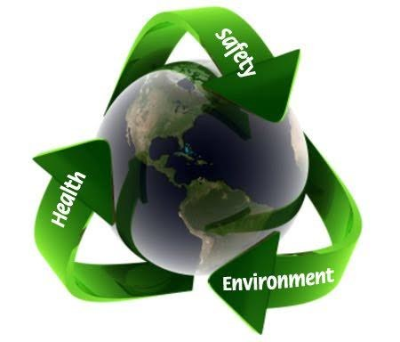
Environmental Safety
Environmental safety involves protecting the environment from pollution, waste accumulation, and other activities that may threaten human health and the well-being of living organisms.
Forms of Pollution
Soil pollution
Contamination of soil by harmful substances such as excess agrochemicals, waste and industrial discharge, which lowers soil quality and crop yields.
Air pollution
Release of harmful gases, smoke and dust into the air, for example from burning waste and vehicle exhaust, which affects breathing and health.
Water pollution
Contamination of streams, lakes and wells by waste, chemicals and sewage, which harms people and aquatic life.
Another Big Competence
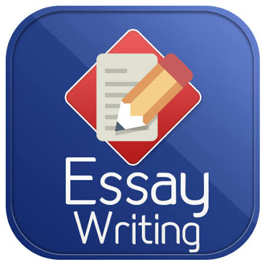
Essay writingWriting a clear environmental essay with a logical structure: an introduction, well-organised paragraphs that explain each point with evidence, and a conclusion.
My Mini Research Work on Environmental Safety
As part of my mini-research on solid waste management, I participated in an activity at Lwanga Hostel aimed at assessing how solid waste is managed within the hostel environment. The activity involved observing waste disposal practices, the use of communal bins, waste collection, and the general cleanliness of the surroundings. I also helped identify some challenges associated with waste management and the importance of proper waste disposal in maintaining a clean, healthy, and safe environment. This experience helped me appreciate the role of individual responsibility and collective participation in promoting effective solid waste management.
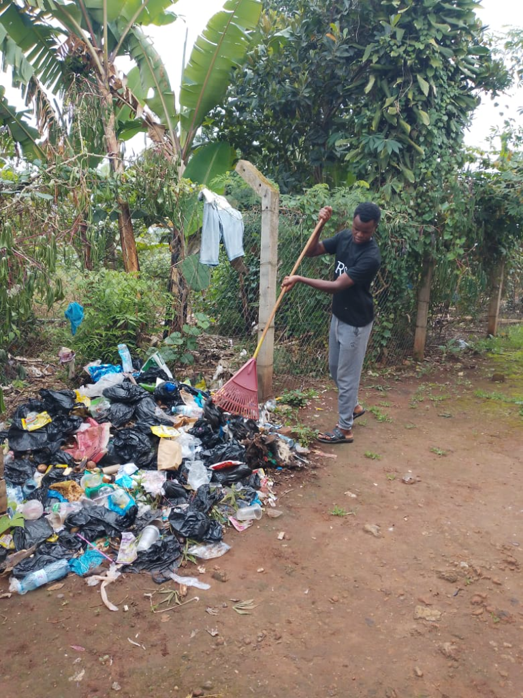
Cell Biology and Genetics
Competences
- Explaining the cell as the basic unit of life and describing the structure and function of its parts.
- Applying Mendel's laws to work out crosses and predict the ratios of offspring.
- Distinguishing continuous from discontinuous variation and giving examples of each.
- Collecting, organising and presenting data using frequency tables, histograms and frequency polygons.
- Explaining DNA structure and replication, transcription and translation, mutation and repair, and recombinant DNA technology.
My Work on Variation
For the variation practical, I worked with the handspan measurements (in cm) of 30 students from Leo Lwanga Hostel. I organised the raw data, grouped it into class intervals, tallied it into a frequency table, and then drew a histogram and a frequency polygon.
Handspan is an example of continuous variation. It can take any value within a range and is influenced by many genes working together with the environment.
.jpeg)
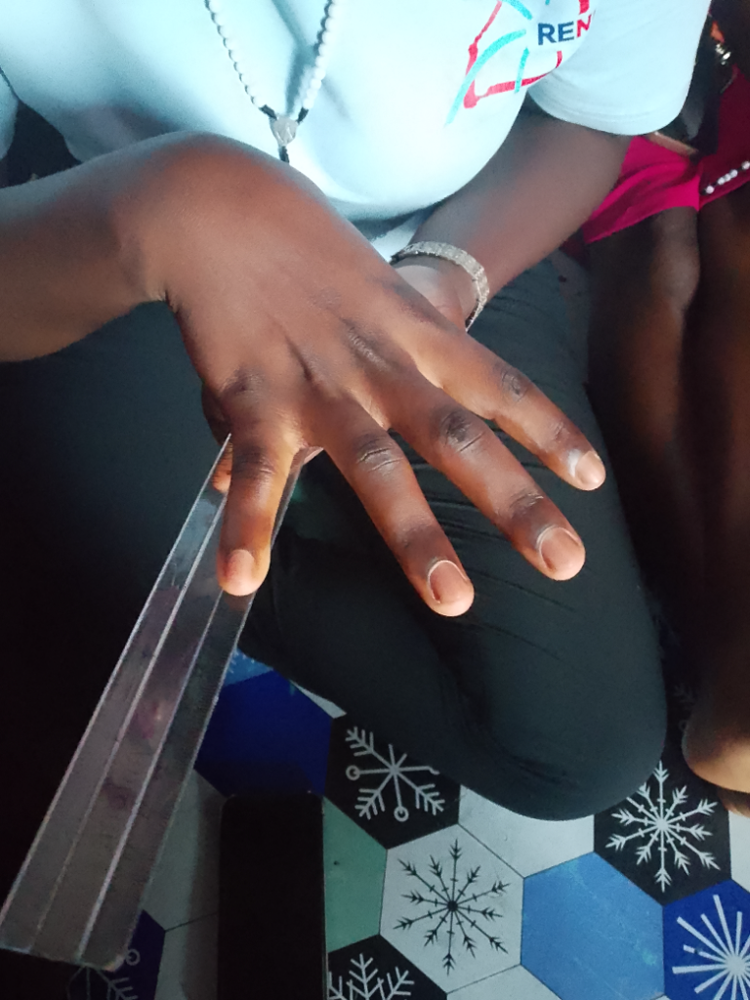
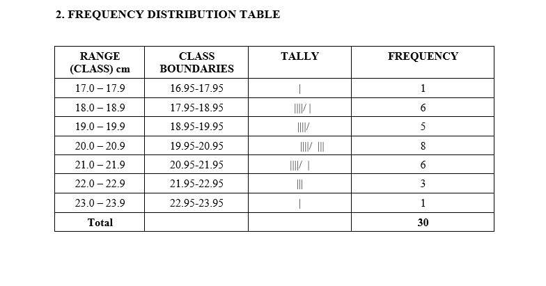
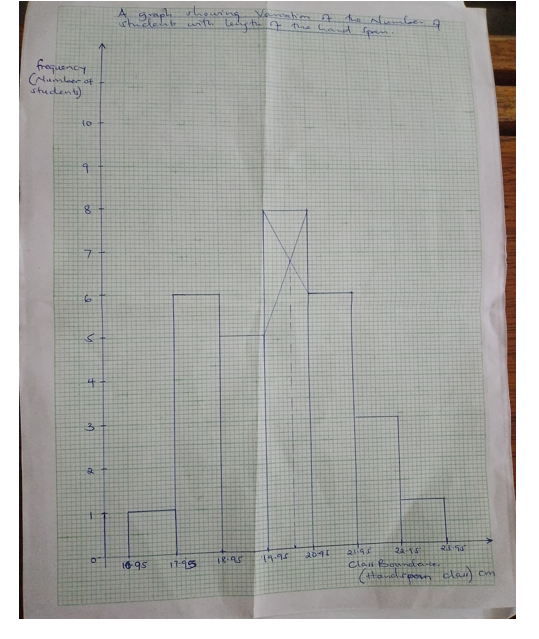
My histogram shows the handspan of the 30 students grouped into classes of 1 cm. Most students fall in the middle classes, with the tallest bar of 8 students at 19.95 to 20.95 cm, and the number of students falls towards both the shortest and the longest handspans. This spread, with many values near the middle and few at the extremes, is typical of continuous variation.
Plant Structure
Examining Leaves
I examined the leaves of common plants on the university campus, including cassava, jacaranda, bean, mango, maize and papaya. I observed their venation, sketched some of them, and classified them as simple, pinnately compound or palmately compound. I also sketched a cross section of a maize leaf to see the stomata, cuticle, chloroplasts and air spaces.
Estimating Stomata on a Hibiscus Leaf
In this practical, I estimated the number of stomata on the lower epidermis of a Hibiscus leaf using a microscope.
- I found the field diameter: eyepiece field number 18 divided by the ×40 objective gives 0.45 mm.
- I counted the stomata in the field of view at ×40 three times and got 21, 25 and 22. The mean was 22.67.
- I calculated the field area using πr², which gave 0.1590 mm².
- I worked out the stomatal density: 22.67 ÷ 0.1590 = 142.58 stomata per mm².
- I measured the leaf area as 47 cm² (4700 mm²), so the whole lower surface has about 670,000 stomata.
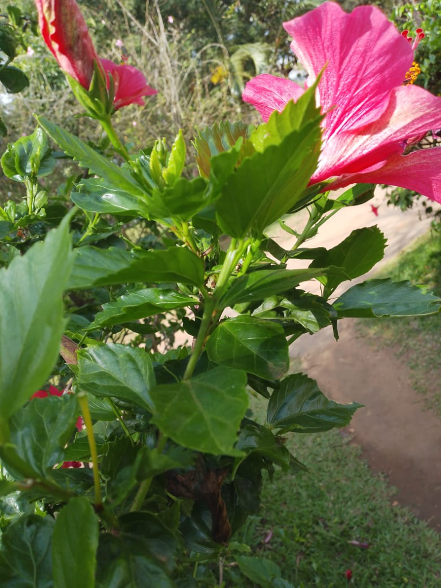
.jpeg)

Activities
Presentations
- Floral taxonomy: a group presentation on five plant families: Fabaceae, Poaceae, Solanaceae, Malvaceae and Asteraceae. I presented Poaceae (the grasses) and made a poster of the grass floret and maize tassel.
- Molecular genetics and DNA technology: a presentation with Nsubuga John Baptist.
- Soil pollution and its management: a presentation with Nsubuga John Baptist, backed by a written paper.
.jpeg)
Group Discussions
Group work taught me to share tasks, listen to other views and put our ideas together. We prepared the floral taxonomy guide as a group, and in class discussions on air pollution and water pollution I learnt from my classmates' presentations.
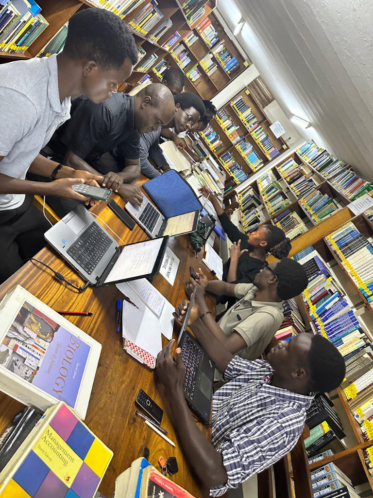
.jpeg)
Field Trip to Lake Mburo
The field trip to Lake Mburo let me see in nature what we study in class: the variety of plants and animals, how organisms are adapted to their habitat, and how people and wildlife share the same environment.
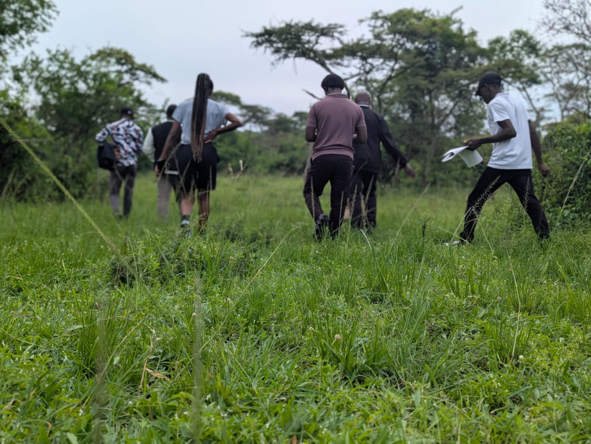
.jpeg)
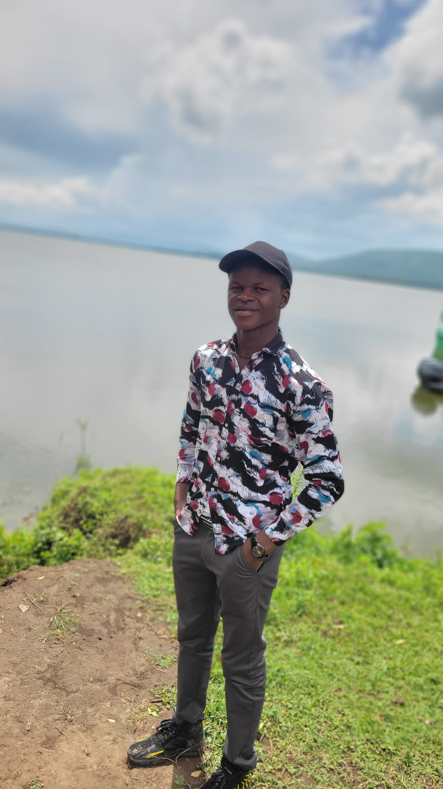
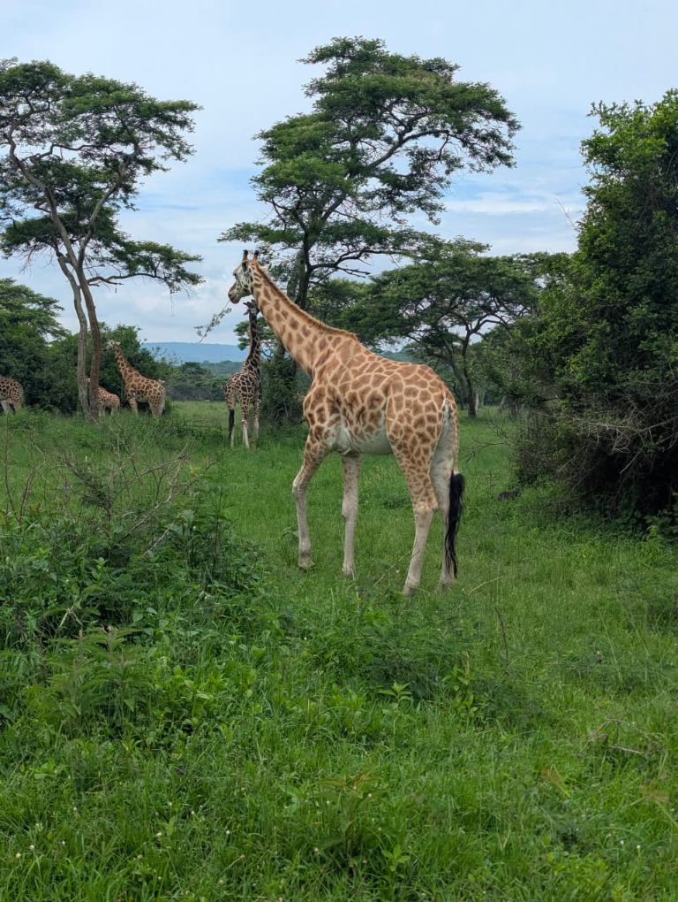
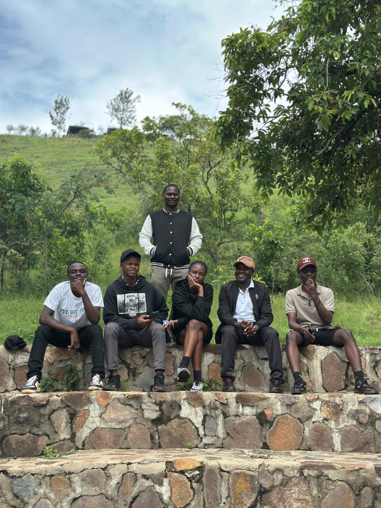
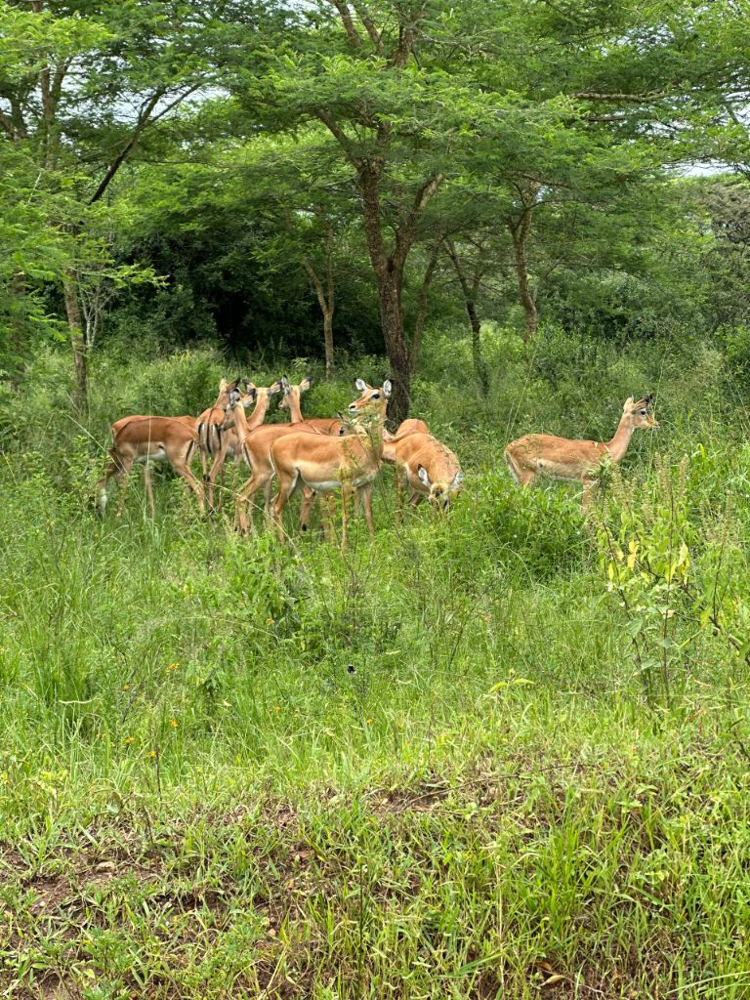
Achievements
- Biology Knowledge: Developed knowledge and practical skills in genetics, cell biology and ecology.
- ICT Skills: Ability to use Google Sites to make a responsive portfolio website.
- Presentation Skills: Improved public speaking, communication and teamwork skills.
- Environmental Responsibility: Participated in solid waste management activities at Lwanga Hostel.
- Research Skills: Developed skills in questionnaire design, data collection, presentation and analysis.
Personal Reflections
- Academic Growth: Gained deeper understanding of Biology and ICT through continuous learning and practice.
- Teaching Development: Realised the importance of patience, preparation and effective communication in teaching.
- Digital Learning: Appreciated how digital tools such as Google Sites can make learning more interactive and accessible.
- Environmental Awareness: Recognised the importance of personal responsibility in maintaining a clean and safe environment.
- Personal Growth: Developed confidence, resilience and determination to achieve my career goals.
"Every experience has taught me something valuable, and every challenge has become an opportunity to grow."